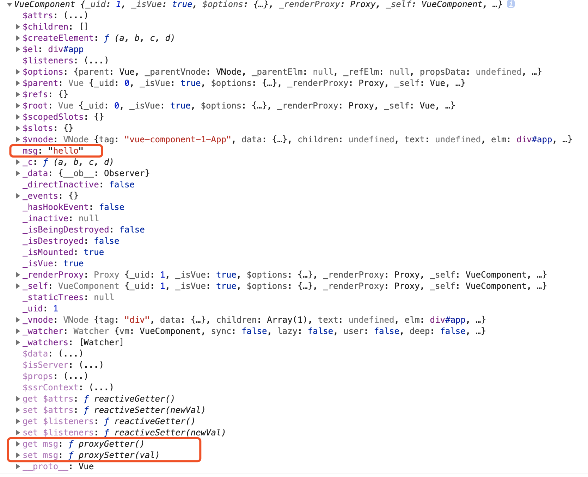

initData
分析：
- 获取当前实例
vm的上的$options.data，并判断它是否是一个函数（这是为什么我们定义data的时候，可以是对象，可以是函数 - 如果data（处理后的结果）不是一个纯对象，则提示
data functions should return an object: - 获取data的所有key组成的数组，遍历该数组：
- 判断data中的属性是否在props或者methods中已经被定义，从 initState 我们可以知道props，methods是先执行的
- 如果data中定义的变量key不是以$或者是_命名， 调用
proxy(vm, _data, key),将data中的key代理到vm实例上
- 监听数据变化
observe(data, true /* asRootData */),这一段暂不分析
// 初始化data
function initData (vm: Component) {
// 获取当前实例vm配置项中的data，即组件中定义的data，是一个对象
let data = vm.$options.data
// 如果 当前实例vm配置项中的data 是一个函数，调用方法 getData(data, vm)，
// 否则直接获取 当前实例vm配置项中的data 赋值给data变量，同时给当前实例增加属性_data
data = vm._data = typeof data === 'function'
? getData(data, vm)
: data || {}
// 如果data不是一个纯对象，提示data函数必须返回一个对象
if (!isPlainObject(data)) {
data = {}
process.env.NODE_ENV !== 'production' && warn(
'data functions should return an object:\n' +
'https://vuejs.org/v2/guide/components.html#data-Must-Be-a-Function',
vm
)
}
// proxy data on instance
// 获取data对象所有的key组成的数组keys
const keys = Object.keys(data)
// 获取当前实例vm配置上的props
const props = vm.$options.props
// 获取当前实例vm配置上的methods
const methods = vm.$options.methods
// 定义data对象所有key组成的数组的长度
let i = keys.length
// 遍历 数组keys
while (i--) {
// 获取data对象当前的key
const key = keys[i]
// 如果methods存在，检测data中定义的key是否存在于methods中
// 这就是为什么我们不能定义同名的data和methods
if (process.env.NODE_ENV !== 'production') {
if (methods && hasOwn(methods, key)) {
warn(
`Method "${key}" has already been defined as a data property.`,
vm
)
}
}
if (props && hasOwn(props, key)) {
// 如果props存在，检测data中定义的key是否存在于props中
// 这就是为什么我们不能定义同名的data和props
process.env.NODE_ENV !== 'production' && warn(
`The data property "${key}" is already declared as a prop. ` +
`Use prop default value instead.`,
vm
)
} else if (!isReserved(key)) { //如果data中定义的变量key不是以$或者是_命名
// 作用是把 data 上的属性代理到当前 vm 实例上
proxy(vm, `_data`, key)
}
}
// observe data，监听数据变化
observe(data, true /* asRootData */)
}
proxy的实现
分析：
- 定义属性描述符
sharedPropertyDefinition - 通过调用函数
Object.defineProperty(target, key, sharedPropertyDefinition)，给当前实例vm添加属性key(data，props的key)，并给对应的key添加getter和setter：proxyGetter,proxySetter
// 定义 属性描述符 常量
const sharedPropertyDefinition = {
enumerable: true,// 属性能够出现在对象的枚举属性中。默认为 false。
configurable: true, //该属性描述符能够被改变，同时该属性也能从对应的对象上被删除。默认为 false。
get: noop, // 当访问该属性时，该方法会被执行，方法执行时没有参数传入，但是会传入this对象（由于继承关系，这里的this并不一定是定义该属性的对象）。
set: noop // 当属性值修改时，触发执行该方法。该方法将接受唯一参数，即该属性新的参数值。
}
/**
* 定义代理函数 proxy
* 作用是把 props 和 data 上的属性代理到 vm 实例上
* @param {*} target: vm 实例
* @param {*} sourceKey: _props, _data
* @param {*} key: 定义的props，data的key
* 结果： vm._data.dataKey = vm.dataKey , vm._props.propsKey = vm.propsKey
* 这也就是为什么比如我们定义了如下 props，却可以通过 vm 实例访问到它。
*/
export function proxy (target: Object, sourceKey: string, key: string) {
// sharedPropertyDefinition全局定义的一个属性描述符
// 通过设置属性描述符的get函数，target[key] = target[sourceKey][key]
// 例如： vm.dataKey = vm._data.dataKey
sharedPropertyDefinition.get = function proxyGetter () {
return this[sourceKey][key]
}
// 通过设置set函数，target[sourceKey][key] = target[key]
// 例如： vm._data.dataKey = vm.dataKey
sharedPropertyDefinition.set = function proxySetter (val) {
this[sourceKey][key] = val
}
// 直接在一个对象上定义一个新属性，或者修改一个对象的现有属性， 并返回这个对象。
Object.defineProperty(target, key, sharedPropertyDefinition)
}
简单实例验证:
<template>
<div id="app">
<div>{{msg}}</div>
</div>
</template>
<script>
export default {
name: 'App',
data() {
return {
msg: 'hello',
};
},
mounted() {
console.log(this)
},
};
</script>
结果如下图:
